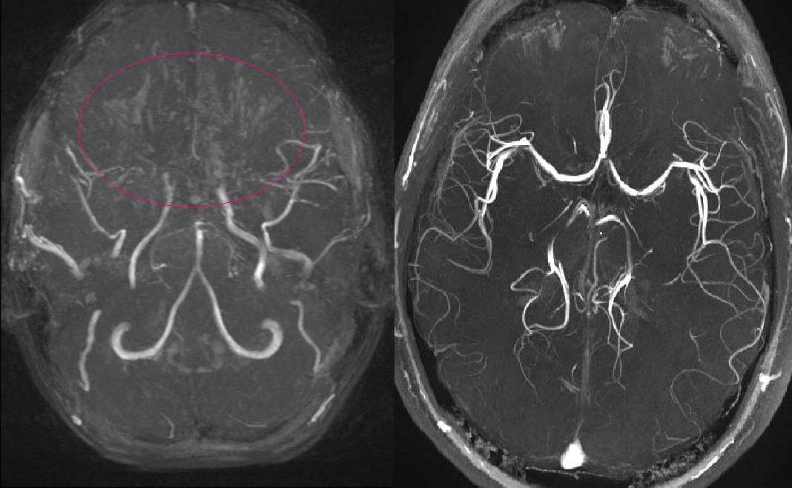
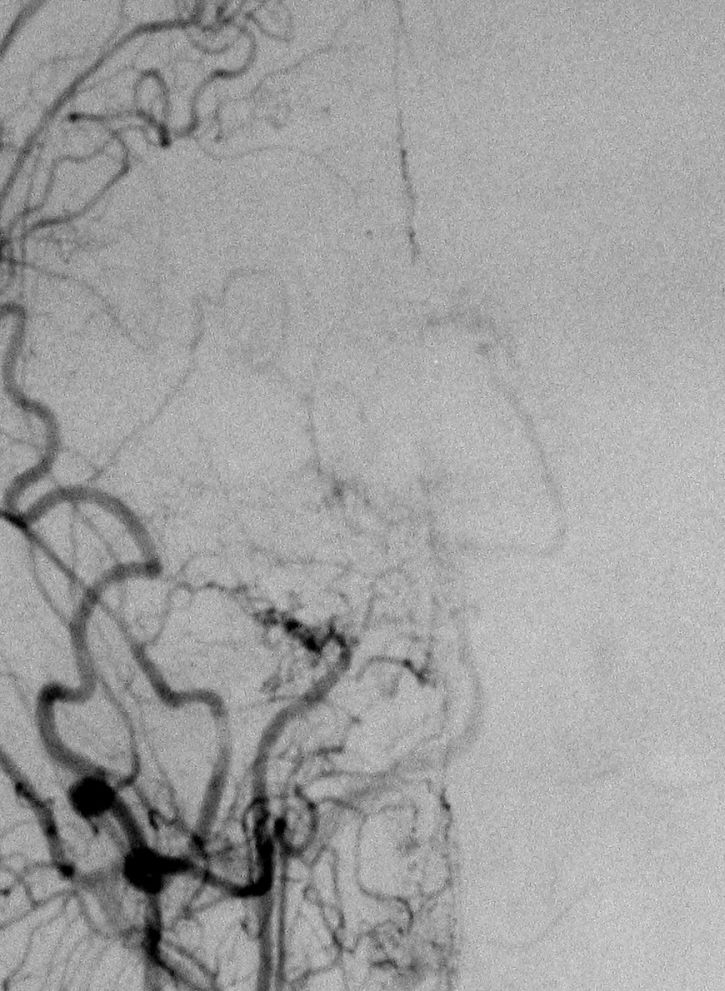

1782 — Phình mạch nội sọ trong bệnh moyamoya: thân vs bàng hệ, tầm soát bằng gì & vì sao chảy máu vẫn xảy ra SAU tái thông / Moyamoya-associated intracranial aneurysm
Tags: pattern:phinh-mach pattern:hep-tac-mach pattern:xuat-huyet-nao vung:nao-nhi score:Suzuki protocol:DSA-3D protocol:CTA protocol:MRA-TOF
Mức chắc chắn (certainty): tổng hợp y văn (literature synthesis) — loạt 42 phình chưa vỡ ở bệnh moyamoya (PMC9947525), loạt 11 phình bàng hệ đã vỡ được can thiệp bằng nút mẹ (PMC9923357), ca giả phình to nhanh và vỡ lại 4 ngày sau bypass (PMC10918708), tổng quan bệnh moyamoya 2025 (PMC12511514). Số nào nguồn không đưa thì ghi "chưa rõ".
Câu chốt: trong bệnh moyamoya có hai loại phình khác hẳn nhau về sinh bệnh, nguy cơ và cách xử trí — phình thân (bifurcation: ICA, ACoA, MCA, đỉnh động mạch nền) hành xử gần như phình thường; và phình trên mạng bàng hệ (động mạch màng mạch trước/màng mạch sau xa, thể vân – đồi thị, P2–3, động mạch màng não giữa xuyên màng cứng) — rất nhỏ (2,7 ± 0,6 mm vẫn vỡ), khó can thiệp, và thường phải nút động mạch mẹ (parent artery occlusion, PAO). Nối 1780 – Chọn kỹ thuật tái thông moyamoya (kỹ thuật mổ) và 248 – Can thiệp giả phình/bóc tách động mạch cổ (kỹ thuật nội mạch).
1. Tổng quan bệnh học – cơ chế hình ảnh
1.1 Vì sao bệnh moyamoya sinh ra phình — và vì sao phình đó khác phình thường (TẠI SAO)
- Nền bệnh: hẹp – tắc tiến triển đoạn cuối động mạch cảnh trong (ICA) và đoạn gần MCA/ACA, kèm mạng bàng hệ mảnh ở đáy não ("làn khói thuốc" — puff of smoke) (PMC12511514). Ở người Đông Á, RNF213 p.R4810K là yếu tố nhạy cảm chính.
- Cơ chế phình thân (trunk/bifurcation): dòng máu vẫn đi qua các chỗ chia đôi còn thông (ICA trên hang, ACoA, chỗ phân đôi MCA, đỉnh động mạch nền) → ứng suất thành mạch tại điểm phân nhánh như phình thường. Loại này chiếm 35/42 phình (83,3%) trong loạt tự nhiên (PMC9947525).
- Cơ chế phình bàng hệ (peripheral/collateral): để bù vùng thiếu máu, các động mạch xuyên nhỏ giãn ra (màng mạch trước, màng mạch sau, thể vân – đồi thị, màng não giữa xuyên màng cứng). Ba yếu tố cộng lại:
- Thành mỏng, thiếu lớp cơ trơn và màng đàn hồi — mạch bàng hệ là mạch nhỏ "dùng tạm", không được cấu tạo để chịu áp lực hệ thống;
- Áp lực thành cao vì đây là đường thoát chính cho một vùng não thiếu máu;
- Theo Laplace (P thành ∝ áp lực × bán kính / độ dày thành) — bán kính tăng khi giãn + thành mỏng = ứng suất thành tăng gấp nhiều lần → phình và vỡ ở kích thước rất nhỏ. Số liệu: phình bàng hệ đã vỡ có đường kính trung bình 2,7 ± 0,6 mm (PMC9923357).
- TẠI SAO vị trí vỡ khác nhau: máu thường chảy vào não thất và vùng quanh não thất vì mạng bàng hệ nằm sâu (động mạch màng mạch, thể vân – đồi thị). Trong 42 ca: 33,3% khởi phát bằng xuất huyết — 8/14 là xuất huyết não thất, 5/14 trong nhu mô, chỉ 1/14 dưới nhện (PMC9947525). Phình ngoại vi khởi phát bằng xuất huyết 57,1% so với 28,6% ở phình thân.
- Vì sao chảy máu vẫn xảy ra SAU tái thông (câu hỏi thực hành): ba cơ chế khác nhau, đừng gộp:
- Hội chứng tưới máu quá mức (CHS) — sau bypass trực tiếp, vùng não trước đó giãn mạch tối đa nhận dòng máu mới → phù, xuất huyết; tỷ lệ 21,5–50% (PMC12511514).
- Phình bàng hệ to nhanh rồi vỡ do thay đổi huyết động đột ngột sau khi áp lực tưới máu tăng: ca giả phình động mạch màng mạch sau to nhanh và vỡ lại chỉ 4 ngày sau STA–MCA, phải coil rồi mổ bypass lần hai (PMC10918708).
- Phình không liên quan đến vùng bypass — xuất huyết từ mạch bàng hệ khác, hoặc từ vùng não thất vốn đã có vi chảy máu (microbleed).
- Ngược lại, phình cũng có thể TỰ THU NHỎ: khi Suzuki tiến triển (bàng hệ "già" đi và thay bằng bàng hệ ngoài sọ), dòng qua phình giảm → 10/27 phình teo hoặc mất trên chụp lặp (trung vị theo dõi 20,5 tháng); teo mất liên quan có ý nghĩa với tiến triển Suzuki (P = 0,015) — 5/6 ca có tiến triển Suzuki thì phình teo (PMC9947525). Đây là lý do không can thiệp mọi phình nhỏ không vỡ ngay lập tức.
1.2 Ngưỡng định lượng nằm lòng (bắt buộc nhớ)
| Chỉ số | Con số | Nguồn |
|---|---|---|
| Phân bố phình | thân 35/42 (83,3%), ngoại vi 7/42 (16,7%); thân gồm ICA 20, ACoA 3, MCA 2, PCA 4, thân nền 5, ACA 1 | PMC9947525 |
| Cỡ phình | nhỏ < 5 mm: 34/42 (81,0%); trung bình 5–15 mm: 8/42 | cùng nguồn |
| Cỡ phình bàng hệ đã vỡ | 2,7 ± 0,6 mm (nút mẹ bằng coil/Onyx) | PMC9923357 |
| Khởi phát bằng xuất huyết | 33,3% (14/42); phình ngoại vi 57,1% so với phình thân 28,6% | PMC9947525 |
| Vỡ trong theo dõi phình CHƯA vỡ | 0/30 bệnh nhân trong 37,9 ± 32,5 tháng | cùng nguồn |
| Thay đổi phình trên chụp lặp | teo/mất 10/27 (37,0%), không đổi 16/27, to lên 1/27 | cùng nguồn |
| Tái phát đột quỵ hằng năm (điều trị bảo tồn) | 3,2–15% | PMC12511514 |
| Vi chảy máu trên SWI/T2* | gặp ở 28–46% bệnh nhân, liên quan xuất huyết não thất | cùng nguồn |
| Biến chứng sau tái thông | xuất huyết 0,7–8,0%; thiếu máu 1,6–16%; CHS 21,5–50%; biến chứng vết mổ 17,6–21,4% | cùng nguồn |
| Suzuki giai đoạn muộn | V–VI: nguy cơ xuất huyết, teo não, suy giảm nhận thức cao hơn | cùng nguồn |
| Can thiệp nút mẹ (PAO) | 11 ca: coil 63,6%, Onyx 36,4%; biến chứng chảy máu trong mổ 18,2%; 100% mRS 0–2 khi ra viện/theo dõi | PMC9923357 |
2. Mẫu hình + chẩn đoán phân biệt theo vị trí (gamut)
Mẫu hình cần nhận ra: bệnh nhân moyamoya đã biết (hoặc người trẻ Đông Á xuất huyết não thất không rõ nguyên nhân) → trên CTA/MRA thấy chỗ hẹp – tắc ICA cuối + mạng bàng hệ, kèm một túi phình nhỏ ở thân mạch hoặc trên nhánh bàng hệ sâu.
Gamut theo vị trí (mnemonic "THÂN – BÀNG HỆ – GIẢ – SAU MỔ"):
- THÂN (trunk/bifurcation): ICA đoạn trên hang/xoang hang, ACoA, chỗ phân đôi MCA, đỉnh động mạch nền, PCA đoạn gần. Hình thái túi điển hình, dễ thấy trên CTA/MRA. Xử trí như phình thường (clip/coil) — nhưng phải tính đến nguy cơ CHS khi tái thông cùng lúc.
- BÀNG HỆ (collateral/peripheral): động mạch màng mạch trước xa (AChA), màng mạch sau (PChA), thể vân – đồi thị (lenticulostriate) xa, P2–3 / P4–5 của PCA, động mạch màng não giữa xuyên màng cứng. Rất nhỏ, sát não thất; can thiệp khó → PAO là lựa chọn cuối.
- GIẢ (pseudoaneurysm): sau chấn thương hoặc sau tái thông, thành chỉ còn lớp ngoài → to nhanh, vỡ lại sớm (4 ngày) (PMC10918708).
- SAU MỔ (post-bypass change): phình mới xuất hiện hoặc to lên sau bypass (do đổi huyết động), hoặc teo/mất khi Suzuki tiến triển.
Phân biệt với "không phải phình" (quan trọng ngang với tìm phình): mạng bàng hệ có thể giãn, ngoằn ngoèo, chồng hình trên MIP → trông như nhiều túi nhỏ; vi chảy máu trên SWI là đốm tròn tối < 5 mm, không phải túi phình; CHS sau mổ gây phù và xuất huyết nhưng không có túi.
3. Bảng so sánh phân biệt (ma trận đối chiếu)
| Thực thể (entity) | Hình ảnh điển hình | Chốt vào (rule-in) | Chốt loại (rule-out) | Gợi ý xác nhận |
|---|---|---|---|---|
| Phình thân trong moyamoya | Túi ở chỗ phân đôi (ICA/ACoA/MCA/đỉnh nền), cổ rõ, thường ≥ 3 mm | Túi tại điểm phân nhánh + có cổ + không đổi hình theo nhát cắt | Nằm trên nhánh xuyên nhỏ, không có cổ → nghĩ phình bàng hệ | CTA lát ≤ 1 mm + DSA 3D xác nhận |
| Phình bàng hệ (AChA/PChA/LSA/P2–3/MMA) | Túi rất nhỏ (< 3 mm) nằm sâu, sát não thất, trên mạch bàng hệ ngoằn ngoèo | Túi + xuất huyết não thất + mạng bàng hệ kiểu moyamoya | Túi lớn ở thân mạch → không phải loại này | DSA 3D là chuẩn; CTA/MRA dễ bỏ sót |
| Giả phình sau tái thông | Túi thành không đều, to nhanh trong vài ngày, không có cổ thật | Tiền sử bypass ≤ 1 tuần + túi to lên trên chụp lặp | Kích thước ổn định nhiều tháng → không phải giả phình cấp | Chụp lặp sớm (DSA/CTA) khi có triệu chứng mới |
| Vi chảy máu (microbleed) | Đốm tối tròn < 5 mm trên SWI/T2*, thường quanh não thất, không thấy trên CTA | Nhiều đốm tối rải rác + không có túi trên DSA | Có túi có cổ trên DSA → không phải chỉ microbleed | MRI SWI 3T; đếm số đốm, so phim cũ |
| Mạng bàng hệ giãn (puff of smoke) không phình | Chùm mạch ngoằn ngoèo, không có túi đơn lẻ, thay đổi theo thì | Hình chùm, không có túi bờ rõ, không điểm yếu thành khu trú | Túi bờ rõ, giữ hình ở mọi thì → phình thật | DSA 3D xoay; so sánh nhiều thì |
| Hội chứng tưới máu quá mức (CHS) | Phù vỏ – dưới vỏ ± xuất huyết cùng bên bypass, xuất hiện ngày 1–7 | Sau bypass trực tiếp + tăng tưới máu trên ASL/SPECT + không có túi mới | Có túi mới/to lên → nguyên nhân là phình, không phải CHS | ASL/SPECT; DSA loại phình |
| Xuất huyết do tăng huyết áp | Ổ máu thể vân – đồi thị, không mạng bàng hệ | HA cao, không hẹp ICA cuối, không bàng hệ moyamoya | Có hẹp ICA cuối hai bên + bàng hệ → moyamoya | CTA/DSA; hỏi tiền sử |
Ảnh ghép đối chiếu (mạng bàng hệ moyamoya so với người bình thường):

MRA MIP: bên trái là bé gái 11 tuổi bệnh moyamoya — mất tín hiệu MCA/ACA đoạn gần, thay bằng chùm mạch bàng hệ (vòng đỏ); bên phải là người bình thường để so sánh. Đây là nơi phình bàng hệ hình thành. Nguồn: MBq & SBarnes, Wikimedia Commons, CC BY-SA 3.0.4. Protocol chụp + hệ phân độ & chiến lược xử trí
Chụp gì (thứ tự leo thang):
- MRA TOF 3T — tầm soát không xâm lấn ở trẻ và theo dõi; hạn chế: bỏ sót phình < 3 mm và dễ "giả phình" do chồng hình mạng bàng hệ.
- CTA lát mỏng ≤ 1 mm + dựng 3D — tốt cho phình thân; đánh giá được xương/Canxi; vẫn có thể bỏ sót phình bàng hệ nhỏ.
- DSA (+ 3D xoay) — chuẩn vàng để chẩn đoán moyamoya và bắt buộc khi: CTA/MRA âm nhưng bệnh nhân xuất huyết não thất không rõ nguyên nhân, hoặc trước khi can thiệp. DSA cũng cho biết Suzuki và nguồn bàng hệ.
- MRI SWI/T2* — đếm vi chảy máu (28–46% bệnh nhân), yếu tố dự báo xuất huyết não thất.
- ASL/SPECT/PET — đánh giá dự trữ tưới máu trước mổ và phát hiện CHS sau mổ.
Suzuki (phân độ theo DSA) — vì sao phải ghi vào hồ sơ:
flowchart TD
A[Nghi/hoặc đã chẩn đoán moyamoya] --> B[DSA 3D: chấm Suzuki và tìm phình]
B --> C{Suzuki I-III, còn dòng MCA/ACA?}
C -->|Có| D[Phình thân: clip hoặc coil như phình thường; mổ tái thông theo 1780]
C -->|Không, Suzuki IV-VI| E[Phình bàng hệ: ưu tiên bảo tồn nếu nhỏ và chưa vỡ]
E --> F{Đã vỡ hoặc to lên trên chụp lặp?}
F -->|Có| G[PAO bằng coil/Onyx, hoặc clip nếu mổ được - chấp nhận mất nhánh]
F -->|Không| H[Theo dõi MRA/CTA 6-12 tháng; phình có thể teo khi Suzuki tiến triển]
D --> I[Sau mổ: ASL/SPECT tìm CHS; chụp lặp nếu đau đầu mới hoặc tri giác xấu]
G --> I
I --> J{Phình to nhanh hoặc chảy máu lại trong 7 ngày?}
J -->|Có| K[Chụp DSA cấp: can thiệp lại - ca giả phình vỡ lại ngày 4 sau bypass]
J -->|Không| L[Theo dõi dài hạn: vi chảy máu trên SWI, Suzuki, tưới máu]
Chiến lược xử trí (theo nguồn):
- Phình thân: xử lý như phình nội sọ thường — clip hoặc coil; nếu mổ tái thông cùng lúc, ưu tiên xử lý phình trước để tránh làm tăng áp lực xuyên thành trong lúc tăng tưới máu (nguyên lý, mức suy luận).
- Phình bàng hệ: PAO (nút động mạch mẹ) bằng coil hoặc Onyx là lựa chọn cuối nhưng an toàn chấp nhận được: 11 ca, 100% mRS 0–2, biến chứng chảy máu trong mổ 18,2%; tác giả lưu ý PAO chỉ giải quyết tạm thời — bệnh nền vẫn tiến triển (PMC9923357).
- Phình nhỏ, chưa vỡ, không tăng kích thước: theo dõi là hợp lý — 0/30 bệnh nhân vỡ trong ~38 tháng, và 37% phình teo/mất (PMC9947525).
- Sau tái thông: theo dõi CHS (ASL/SPECT, huyết áp), và chụp lại ngay nếu đau đầu mới, tri giác xấu, hoặc xuất huyết mới — ca giả phình vỡ lại ngày 4 cho thấy cửa sổ nguy hiểm là tuần đầu (PMC10918708).
5. Biến thể bình thường và cạm bẫy
- Cạm bẫy 1 — "phình < 3 mm thì không vỡ": đúng với phình thân ở người lớn, sai với phình bàng hệ trong moyamoya — cỡ vỡ trung bình chỉ 2,7 mm (PMC9923357). Đừng dùng ngưỡng 7 mm của phình thường để trấn an.
- Cạm bẫy 2 — can thiệp mọi phình bắt gặp: 37% phình tự teo/mất khi Suzuki tiến triển; can thiệp không cần thiết có thể làm mất một nhánh bàng hệ đang nuôi vùng não thiếu máu. Chỉ can thiệp khi đã vỡ, đang to lên, hoặc có hình thái nguy hiểm.
- Cạm bẫy 3 — bỏ sót phình vì CTA/MRA âm: phình bàng hệ nằm sâu, sát não thất, rất nhỏ → DSA là bắt buộc ở bệnh nhân xuất huyết não thất không rõ nguyên nhân, kể cả khi CTA đẹp.
- Cạm bẫy 4 — đọc mạng bàng hệ thành "nhiều phình": MIP dày làm các nhánh chồng hình thành "chùm túi". Phân biệt bằng DSA 3D nhiều thì: phình thật giữ hình và có cổ, bàng hệ thay đổi theo thì.
- Cạm bẫy 5 — gán mọi xuất huyết sau mổ cho "chảy máu do phình": phải loại CHS (21,5–50%) và tăng huyết áp; CHS xử trí bằng kiểm soát huyết áp, an thần, tránh tăng tưới máu, không phải bằng can thiệp mạch.
- Cạm bẫy 6 — quên rằng tái thông có thể làm phình NẶNG LÊN: thay đổi huyết động sau bypass có thể làm giả phình to nhanh và vỡ trong vài ngày; bệnh nhân có phình đã biết cần kế hoạch chụp kiểm tra sớm, không chờ 3 tháng.
- Biến thể bình thường: giãn nhẹ, đối xứng các động mạch xuyên quanh não thất ở người trẻ không có túi khu trú — theo dõi, không can thiệp.
6. Tự lượng giá — Blind Quiz ngay trên trang tĩnh
Ca 1 — Bé gái 11 tuổi, đau đầu tái diễn, yếu nửa người thoáng qua. MRA dựng MIP (bên trái là bệnh nhân, bên phải là người bình thường):
- Câu hỏi: (1) Bất thường chính là gì? (2) Vòng đỏ khoanh vào cấu trúc nào? (3) Bước tiếp theo để tìm phình?
Bấm để hiện đáp án (findings + chẩn đoán)
- Findings: mất tín hiệu đoạn gần MCA và ACA hai bên; thay vào đó là chùm mạch nhỏ ngoằn ngoèo ở đáy não (vòng đỏ) = mạng bàng hệ kiểu moyamoya ("puff of smoke").
- Chẩn đoán: bệnh moyamoya. MRA không đủ để loại phình nhỏ.
- Bước tiếp: DSA 3D — vừa chấm Suzuki, vừa tìm phình thân/bàng hệ; thêm MRI SWI đếm vi chảy máu.
- Nguồn ảnh: MBq & SBarnes, Wikimedia Commons, CC BY-SA 3.0.
Ca 2 — Nữ 45 tuổi, moyamoya thể xuất huyết, được mổ STA–MCA. Ngày thứ 4 sau mổ: đau đầu dữ dội, tri giác giảm, chảy máu não thất tái diễn. DSA:

- Câu hỏi: (1) Vì sao phải chụp DSA ngay chứ không chờ? (2) Hai nguyên nhân phải phân biệt? (3) Hướng xử trí?
Bấm để hiện đáp án (findings + chẩn đoán)
- Findings: DSA ICA phải — hẹp/tắc đoạn cuối ICA, thay bằng mạng bàng hệ dày đặc ("làn khói"); trong bối cảnh xuất huyết não thất tái diễn, phải tìm túi phình nhỏ trên nhánh bàng hệ (thường động mạch màng mạch sau).
- Vì sao chụp ngay: cửa sổ nguy hiểm là tuần đầu sau tái thông — ca giả phình động mạch màng mạch sau to nhanh và vỡ lại chỉ 4 ngày sau STA–MCA (PMC10918708).
- Hai nguyên nhân: (a) giả phình/phình bàng hệ to nhanh do đổi huyết động; (b) CHS (21,5–50%) — CHS không có túi mới.
- Hướng xử trí: coil nút mẹ (PAO) cho túi bàng hệ, rồi mổ bypass lần hai nếu cần; ca gốc ra viện ngày 8, phình tắc hoàn toàn, không chảy máu lại.
- Nguồn ảnh: Dr Frank Gaillard, CC BY 3.0 (Wikimedia Commons; ảnh DSA moyamoya minh hoạ mạng bàng hệ — không phải ảnh của ca trong bài, ca gốc ở PMC10918708).
Ca 3 — Nam 38 tuổi, moyamoya Suzuki IV, tình cờ thấy túi 2,5 mm ở nhánh màng mạch trước trái, chưa vỡ, không triệu chứng.
- Câu hỏi: (1) Có chỉ định can thiệp ngay không? (2) Theo dõi bằng gì và bao lâu? (3) Điều gì khiến quyết định đổi?
Bấm để hiện đáp án (findings + chẩn đoán)
- Không can thiệp ngay: phình chưa vỡ, rất nhỏ, không tăng — trong loạt 42 phình chưa vỡ, 0/30 bệnh nhân vỡ trong 37,9 ± 32,5 tháng, và 37% phình teo/mất khi Suzuki tiến triển (PMC9947525).
- Theo dõi: MRA TOF hoặc CTA 6–12 tháng/lần (chu kỳ thực tế "chưa rõ" — nguồn không đưa lịch chuẩn), kèm MRI SWI đếm vi chảy máu và đánh giá dự trữ tưới máu trước khi mổ tái thông.
- Đổi quyết định khi: phình to lên, xuất huyết (kể cả não thất kín đáo), hoặc có kế hoạch tái thông trực tiếp — vì thay đổi huyết động sau bypass có thể làm phình to nhanh (PMC10918708).
- Lưu ý: ngưỡng "7 mm" của phình thường không áp dụng cho phình bàng hệ moyamoya (cỡ vỡ trung bình 2,7 mm).
Bài liên quan chéo
- 1780 – Chọn kỹ thuật tái thông moyamoya ở trẻ
- 248 – Can thiệp nội mạch giả phình & bóc tách động mạch cổ
- 207 – Phình mạch nội sọ chưa vỡ: nguy cơ vỡ & chỉ định can thiệp
- 200 – Tổng quan hệ Thần kinh
Ảnh
1782_moyamoya_MRA_Commons-MBq.jpg— MBq & SBarnes, Wikimedia Commons, CC BY-SA 3.0.1782_moyamoya_DSA_Commons-Gaillard.jpg— Dr Frank Gaillard, Wikimedia Commons, CC BY 3.0.- Chi tiết nguồn/giấy phép:
images/CREDITS.md.
Không dùng để chẩn đoán độc lập khi chưa có người hướng dẫn.